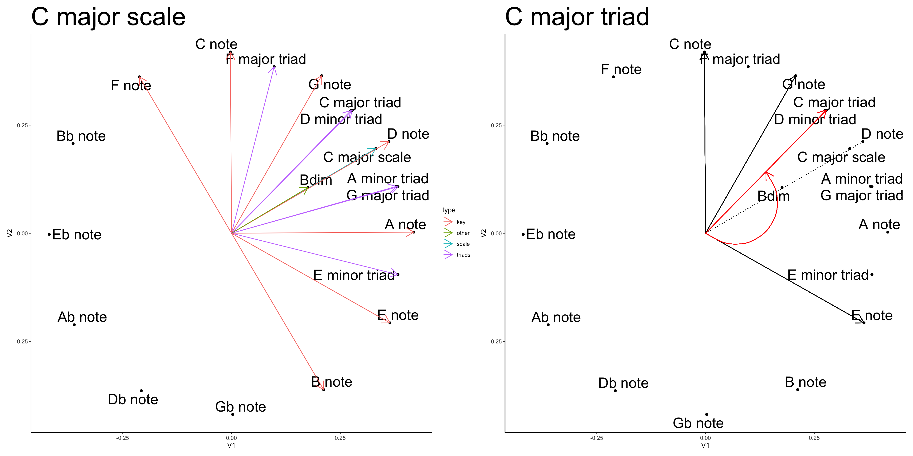

In recent past posts, I’ve been representing chords as vectors and plotting them in 2-dimensional space to visualize similarity relationships. Yesterday, I made some charts to look at basic triads in the C scale, and did a little bit of analysis on the 12-bar blues progression. I’m mostly doing this stuff out of general interest, and with some hope that I can learn something to inform my own playing.
This morning I’ll continue in the same direction by making the same kind of graphs for more chord types besides triads.
The basic idea is to plot a chord as a compound vector inside the circle of fifths. Each of the notes in the chord are vectors that point at their respective notes in the circle of fifths. The chord vector is the average direction of all the note vectors, and it points somewhere in the circle of fifths. Finally, yesterday I added a “spinning” force to some chords that I thought had natural rotational motion with respect to a key center. This last part had potential musical implications in terms of chord progressions that I might find useful when I’m playing.
I’d like to know how other chords “spin”, so I’m making these here graphs.
Example spinning chord chart
Show the code
library(tidyverse)# pre-processing to get the chord vectors# load chord vectorsc_chord_excel <- rio::import("chord_vectors.xlsx")# grab feature vectorsc_chord_matrix <-as.matrix(c_chord_excel[,4:15])# assign row names to the third column containing chord namesrow.names(c_chord_matrix) <- c_chord_excel[,3]# define all keyskeys <-c("C","Db","D","Eb","E","F","Gb","G","Ab","A","Bb","B")# the excel sheet only has chords in C# loop through the keys, permute the matrix to get the chords in the next key# add the permuted matrix to new rows in the overall chord_matrixfor (i in1:length(keys)) {if (i ==1) {# initialize chord_matrix with C matrix chord_matrix <- c_chord_matrix } else {#permute the matrix as a function of iterator new_matrix <-cbind(c_chord_matrix[, (14-i):12],c_chord_matrix[, 1:(13-i)] )# rename the rows with the new key new_names <-gsub("C", keys[i], c_chord_excel[,3])row.names(new_matrix) <- new_names# append the new_matrix to chord_matrix chord_matrix <-rbind(chord_matrix,new_matrix) }}chord_properties <-tibble(type =rep(c_chord_excel$type,length(keys)),key =rep(keys, each =dim(c_chord_matrix)[1]),chord_names =row.names(chord_matrix),synonyms =list(NA),database_chord =FALSE)first_order <- lsa::cosine(t(chord_matrix))# find repeats and build synonym listrepeat_indices <-c()first_occurrence <-c()for(i in1:dim(chord_matrix)[1]){# get the current row evaluate_row <- first_order[i,]# don't count the current item as a repeat evaluate_row[i] <-0# repeats are the ids for any other 1s found repeats <-which(evaluate_row ==1 )if(length(repeats) ==0){ }if(length(repeats) >0){#add to list of repeat items repeat_indices <-c(repeat_indices,repeats)# add synonyms chord_properties$synonyms[i] <-list(synonyms =row.names(chord_matrix)[repeats]) }if(i %in% first_occurrence ==FALSE){if(i %in% repeat_indices ==FALSE){ first_occurrence <-c(first_occurrence,i) chord_properties$database_chord[i] <-TRUE } }}chord_properties <- chord_properties %>%mutate(num_notes =rowSums(chord_matrix),id =1:dim(chord_matrix)[1])# keep only unique chord, recompute similaritieschord_matrix_no_repeats <- chord_matrix[first_occurrence,]first_order_no_repeats <- lsa::cosine(t(chord_matrix_no_repeats))second_order_no_repeats <- lsa::cosine(first_order_no_repeats)# remove scales and individual notesonly_chords <- chord_properties %>%filter(type!="scale", type!="key", database_chord ==TRUE)first_order_chords <- first_order_no_repeats[only_chords$chord_names, only_chords$chord_names]second_order_chords <- second_order_no_repeats[only_chords$chord_names, only_chords$chord_names]
Show the code
library(ggplot2)library(ggrepel)mds_first_order <-cmdscale((first_order-1))mds_first_order <-as_tibble(mds_first_order) %>%cbind(chord_properties)mds_first_order <- mds_first_order %>%mutate(key = forcats::fct_relevel(key,"C","F","Bb","Eb","Ab","Db","Gb","B","E","A","D","G")) %>%mutate(bold_me =case_when(key =="C"~1, key !="C"~0)) %>%filter(type =="key"| chord_names %in%c("C major triad","D minor triad","E minor triad","F major triad","G major triad","A minor triad","Bdim","C major scale") ==TRUE) %>%mutate(V1 = V1*-1,V2 = V2*-1) %>%mutate(line_V1 =case_when(chord_names %in%c("C major triad","D minor triad","E minor triad","F major triad","G major triad","A minor triad","Bdim","C major scale","C note","D note","E note","F note","G note","A note","B note") ==TRUE~ V1),line_V2 =case_when(chord_names %in%c("C major triad","D minor triad","E minor triad","F major triad","G major triad","A minor triad","Bdim","C major scale","C note","D note","E note","F note","G note","A note","B note") ==TRUE~ V2))p1 <-ggplot(mds_first_order, aes(V1, V2, label = chord_names))+geom_point(color="black")+geom_text_repel(size=8, max.overlaps =500)+geom_segment(arrow =arrow(length =unit(0.5, "cm")),aes(x=0,y=0,xend = line_V1,yend = line_V2,color = type))+theme_classic() +ggtitle("C major scale")+theme(plot.title =element_text(size=40))Cmajor <-ggplot(mds_first_order, aes(V1, V2, label = chord_names))+geom_point(color="black")+geom_text_repel(size=8, max.overlaps =500)+geom_segment(arrow =arrow(length =unit(0.5, "cm")),aes(x=0,y=0,xend =filter(mds_first_order,chord_names =="C note")$V1),yend =filter(mds_first_order,chord_names =="C note")$V2)+geom_segment(arrow =arrow(length =unit(0.5, "cm")),aes(x=0,y=0,xend =filter(mds_first_order,chord_names =="E note")$V1),yend =filter(mds_first_order,chord_names =="E note")$V2)+geom_segment(arrow =arrow(length =unit(0.5, "cm")),aes(x=0,y=0,xend =filter(mds_first_order,chord_names =="G note")$V1),yend =filter(mds_first_order,chord_names =="G note")$V2)+geom_segment(aes(x=0,y=0,xend =filter(mds_first_order,chord_names =="D note")$V1),yend =filter(mds_first_order,chord_names =="D note")$V2,linetype ="dotted")+geom_segment(arrow =arrow(length =unit(0.5, "cm")),color ="red",aes(x=0,y=0,xend =filter(mds_first_order,chord_names =="C major triad")$V1),yend =filter(mds_first_order,chord_names =="C major triad")$V2)+geom_curve(arrow =arrow(length =unit(0.5, "cm")),color ="red",curvature =1,aes(x=0,y=0,xend =filter(mds_first_order,chord_names =="C major triad")$V1/2),yend =filter(mds_first_order,chord_names =="C major triad")$V2/2)+theme_classic()+ggtitle("C major triad")+theme(plot.title =element_text(size=40))library(patchwork)p1 + Cmajor

These are repeat graphs from yesterday. I have coded a whole bunch of chords as feature vectors, calculated cosine similarities between all chords, and then used multi-dimensional scaling to render the chords in a compressed 2-dimensional similarity space. This procedure puts each note into a circle of fifths relationship, as shown in the graph.
The C major scale graph draws lines from the origin to each note in the C scale. The graph also has compound vectors showing the direction of each triad, and the direction of the whole scale. The C major scale is symmetrical about the D note, and it points in the direction of the D note. So, I take D as the center.
The C major triad graph shows lines for the notes C, E, and G, and a red line for the compound vector, which indicates the direction of the chord. It’s going somewhere between the G note and D note in chord space. The red line is the center of C major triad. If this was a physical object, like an unusual fork with three tines (for C, E, and G), it should balance on its point by tilting it so the red line points up at 90 degrees. From this perspective, the triad does not a have any spin. It wants to go straight ahead, and does not want to spin around the circle.
However, from the perspective of the key center, which is indicated by the dotted line, the chord does have a spin. If the object was tilted so that the dotted line was at 90 degrees, the chord would fall to the left because it is unbalanced. In recognition of this potential for spin, I put a little curvy arrow on the C major triad pointing in the anti-clockwise direction, which is the direction it would “fall”, or spin on the circle.
Where is the center?
In the above I use the D note as center, seems pretty obvious based on how the C major scale spreads across the circle of fifths. However, I just realized that in the graphs I made yesterday, I didn’t use the key center to compute spin. In the case of the C major triad, the D note direction is also the bisecting line for the largest angle (CE) in the chord. I had used the bisecting line to compute spin for the other chords.
Using the bisecting line as center, major triads spin anti-clockwise and minor triads spin clockwise. The one diminished chord doesn’t spin. I’m not sure that assigning spin this way is a reasonable thing to do or not?
If I keep pursuing a physical object analogy, let’s think about welding a little ringlet onto the point of the chordal fork, and then placing the chord object tines up on a nail. The C major triad object should balance when the notional red line points at 90 degrees. But it will fall over to the left, or to the right depending on the starting angle. Yesterday, I had the G major triad spinning anti-clockwise. It would do this in the G major scale. However, if I take the D note as the center, there is a rationale for having the G major chord spin clockwise.
In short, if I try to use the key center to compute spin, things could get complicated, especially if it’s not clear what the key center is. I’ll leave that for another day.
Today, I guess I will use the bisecting line from the largest angle.
7th chords in C major
The chord charts I made yesterday were done in ggplot2. It would be nice to functionalize the code so I could enter some chord names and get the charts without having to hand code everything. I’m having some indecision on whether or not to spend time writing those functions, or just make the graphs.
I’ll do four by hand to see what I’m dealing with.
In the C∆7 graph I kept the dotted line to the D note as a reference for the key center in C major scale. For all of the chords I used the bisecting line between the largest angle to compute spin.
C∆7 is a symmetrical chord that points in between D and A. It has no spin. Similarly, Dm7 is a symmetrical chord centered on G that has no spin.
G7 is not a symmetrical chord and spins anti-clockwise. Bm7(b5) is not symmetrical and spins clockwise–it also points in the same direction as C7.
I need to call it a morning on this side adventure very soon. But, before I go, I’m thinking again about chord progressions and this spin concept.
Dm7 is ii, and it doesn’t have a spin. It’s off anti-clockwise from the key center. It is close to G7 (V). Perhaps there is some similarity based gravitational force making Dm7 want to go to G7. Based on spin, it’s more like G7 wants to go to Dm7. Both Dm7 and G7 are on the anti-clockwise side of the key center (D note), so to remain in the key center balance needs to be restored after playing II and V, hence the C∆7.
In terms of voicing chords, the spin could change depending on how much weight a given note is given. For example, if C∆7 was played as four notes it would not have a spin. But, if some of the notes were duplicated, then the vector for those notes would get longer and carry more weight. For example, playing a C∆7 chord in the right hand on piano, and with an E bass note would tip the chord to spinning clockwise. Emphasizing a C on the bass would spin it anti-clockwise.